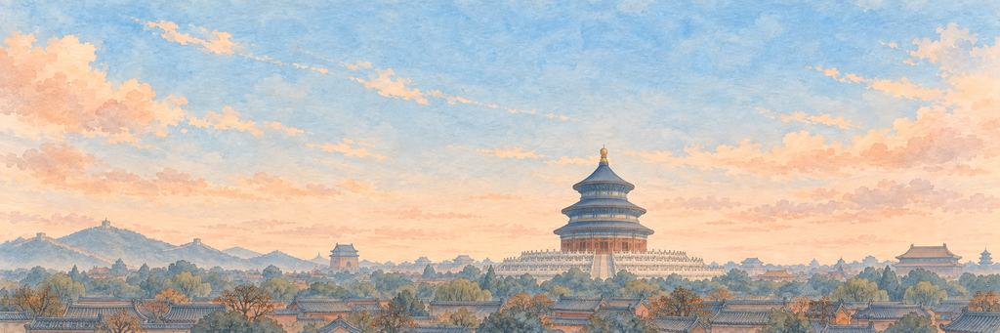

北京 纸飞机游戏
看看天坛那圆圆的蓝屋顶。
平着飞过胡同的屋顶。闯过故宫铜狮，再闯过獬豸。
北方的京城
从 1267 年起，忽必烈在这里修建他的都城：大都。1403 年，明朝的永乐皇帝把这座城改名为北京，意思就是「北方的京城」。1420 年，他建成了紫禁城。皇帝们在紫禁城的宫殿里治理天下，直到 1912 年最后一位皇帝退位。
“我想找到城市的正中心，那座古老的宫殿就在那里。”
地标天坛
天坛和紫禁城一样，在 1420 年建成。每年皇帝都会来到那座有三层蓝色琉璃瓦屋顶的圆形大殿，祈求五谷丰登。大殿是用木头建的，不用一根钉子。1889 年它被雷火烧毁，后来又照着原来的样子重建了。
街区
2024 年底，北京约有 2180 万人。老城如今大部分位于全市 16 个区中的两个：东城区和西城区。这里很多人仍住在胡同里。胡同是狭窄的小巷，两边是四合院。四合院是围着方形院子建的房子，正房在北面，朝南。798 艺术区所在的电子工厂，是 20 世纪 50 年代在东德帮助下建造的。从 21 世纪初起，艺术家把空置的车间改成了工作室和画廊。
湖泊
什刹海的三个湖，前海、后海和西海，曾是大运河的北端。元代，从南方来的运粮船可以一直开到这里的码头。大运河向南延伸约 1800 公里，到达杭州，2014 年成为联合国教科文组织世界遗产。
天际线
老城沿一条直线布局。中轴线全长 7.8 公里，从南边的永定门一直到北边的钟鼓楼，2024 年列入《世界遗产名录》。高楼集中在老城东边的朝阳区商务区。最高的是中国尊，高 528 米，2018 年完工。附近的中央电视台总部大楼在 2012 年完工，两座倾斜的塔楼在顶部和底部相连，形成一个环。当地人叫它「大裤衩」。
何时去看
日落前登上景山，这是紫禁城北边的一座人造山。从山顶的亭子往下看，能看到宫殿的屋顶。9 月和 10 月的天空通常最晴朗。
谁在守护北京的心愿。
精英守护者先醒来，首领守护者守着心愿本身。打中它们的弱点，会「砰！」一声；补上最后一击，就是「KO！」。然后它们都会笑着鞠躬。
-
精英


故宫铜狮
在门口守了六百年 · 紫禁城的守护者
六百年来，铜狮一直守着紫禁城的大门。最大的一对站在太和门前：雄狮一只爪子按着绣球，象征统治天下的权力；雌狮护着一只小狮子。守门狮最早出现在佛教艺术里，后来成了皇帝自己的哨兵。
铜狮抬起大大的脑袋，脖子上的铃铛响了一声。铜狮低吼一声，挪了挪重心。爪子仍按在球上。铜狮低头看着脚下的球，让飞机过去了。
“我要问问他，绣球里面装着什么。”
-
首领

獬豸
公正之兽 · 太和殿的守护者
獬豸是中国传说里的独角神兽，能分辨谁有罪、谁清白，还会用角去顶说谎的人。它蹲在太和殿的屋脊上；负责监督皇帝手下官员的御史，官服上也绣着它的样子。
独角抬了起来。獬豸端详着飞机，像在查它有没有说过谎。獬豸哼了一声，用蹄子刨了刨屋脊，目光没有移开。獬豸把独角低到屋顶上，点了一下头。
“我要马上跟它说实话。”